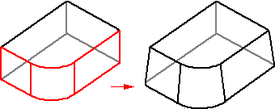
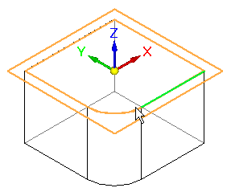
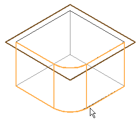
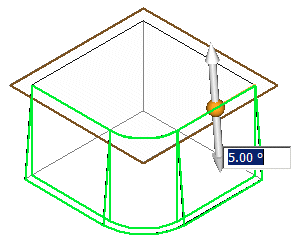
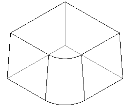
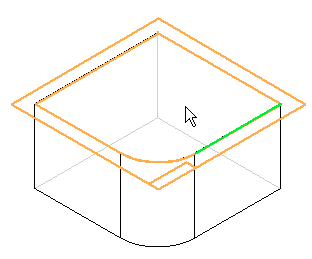
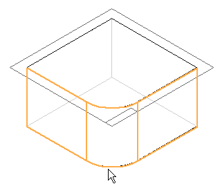
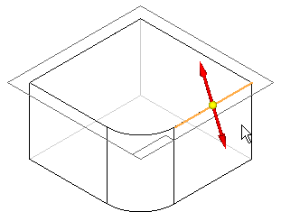
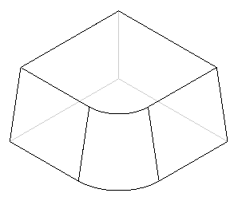

Adding draft to parts
Use the Add Draft command to add draft angles to one or more part faces.

-
To construct a simple draft feature in the synchronous environment, you first define a draft plane.

-
Select the faces to draft.

The part dynamically updates to reflect the draft angle and direction.

-
Right-click to apply the draft angle to the model.

-
To construct a simple draft feature in the ordered environment, you first define a draft plane.

-
Select the faces to draft and type the draft angle on the command bar.

-
On the command bar, click Next to specify the draft direction.

-
Right-click to apply the draft angle to the model.

How do I
Add a draft angle to a partExamples: Constructing drafts to different sides
Examples: Selecting draft faces with the chain method
Examples: Selecting draft faces with the loop sides method
Learn more
Workflow overviewEditing add draft features
Defining the draft plane
Using parting geometry
Split draft
Step draft
Things to consider with rounds and draft angles
Look up more details
Add Draft commandAdd Draft command bar
Add Draft command bar
Add Draft command bar
Draft Options dialog box
Draft Parameters dialog box
Example: Draft Options